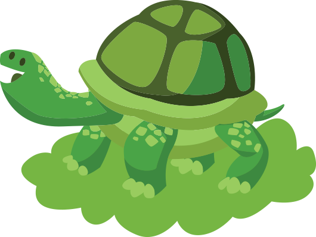

Контактный эко
зоопарк в Лобне,
ТРЦ «Поворот»
Контактный зоопарк в Москве - это удивительное место, где взрослые
и дети могут общаться с животными, учиться любить их и заботиться.
Наших питомцев можно гладить, кормить и брать на ручки. Все животные имеют прививки и ветеринарные паспорта, у нас чисто и уютно,
а заботливые сотрудники проведут увлекательную экскурсию
и расскажут вам удивительные истории про наших постояльцев.
Добро пожаловать в наш частный мини зоопарк !
и дети могут общаться с животными, учиться любить их и заботиться.
Наших питомцев можно гладить, кормить и брать на ручки. Все животные имеют прививки и ветеринарные паспорта, у нас чисто и уютно,
а заботливые сотрудники проведут увлекательную экскурсию
и расскажут вам удивительные истории про наших постояльцев.
Добро пожаловать в наш частный мини зоопарк !
О зоопарке
Театрализованные
представления, Детские
дискотеки, мастер-классы
Аквагрим для детей – уникальная возможность перевоплотится
в сказочного героя, в считанные минуты преобразившись в принцессу,
фею, бабочку, пирата, тигра, кота, человека-паука, бэтмена или любого
другого любимого героя. Аквагрим – это настоящее маленькое чудо,
волшебство. Самое интересное, что деткам нравится не только конечный
результат, но и сам процесс преображения, за которым они наблюдают
с широко открытыми глазами.
в сказочного героя, в считанные минуты преобразившись в принцессу,
фею, бабочку, пирата, тигра, кота, человека-паука, бэтмена или любого
другого любимого героя. Аквагрим – это настоящее маленькое чудо,
волшебство. Самое интересное, что деткам нравится не только конечный
результат, но и сам процесс преображения, за которым они наблюдают
с широко открытыми глазами.